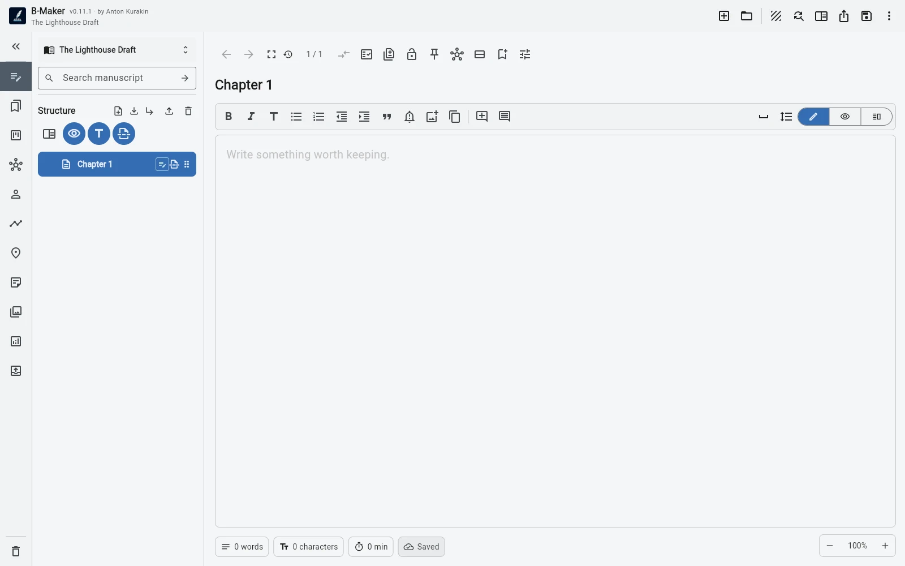
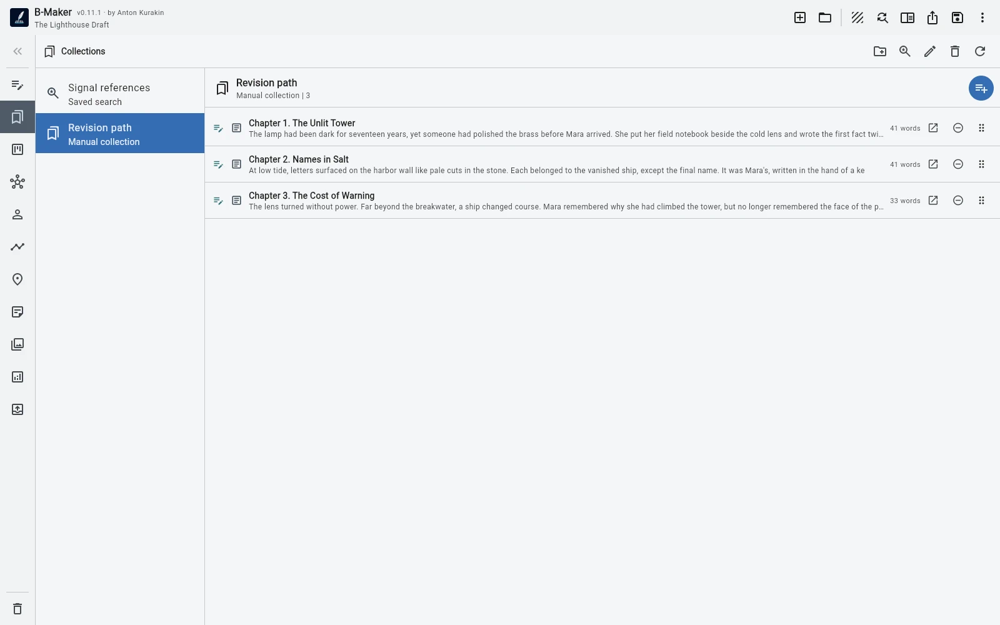

Create one project, add one chapter or article, and write. Every deeper tool should solve a problem that has actually appeared, not a problem the software predicts you might have someday.
A blank project should not feel like a form
Long-form writing software often begins with an impressive amount of structure. That can be useful later, but it also creates an odd first task: before writing anything, you start designing a system for a manuscript that does not exist yet.
B-Maker takes the opposite route. The smallest useful project is intentionally small: a title, one section, and text. You can create more structure immediately if you already know it, but the software does not require you to prove that you have a complete plan.

The second tool should appear because of the second problem
After a few pages, you may need another chapter. Later you may want to collect research, compare two revisions, or see the whole manuscript as one continuous text. Those are different problems, and they do not need to be solved on day one.
The workflow becomes progressive: write first, add structure when navigation becomes awkward, add versions when revision becomes risky, add Idea Map when thinking becomes nonlinear, add analytics when the manuscript is large enough that your intuition stops seeing everything.
Complexity is useful when it arrives late
There is nothing inherently wrong with powerful tools. The problem is paying their cognitive cost before receiving their benefit. A character database is valuable in a novel with twenty recurring characters; it is pointless friction if you are drafting a short essay.
The same is true for boards, plotlines, saved searches, collections, publishing metadata, and editorial checks. B-Maker keeps them inside the project, but they can remain invisible to your workflow until you need them.

One project can change its shape over time
A useful writing system should survive the transition from “I have an idea” to “I have 70,000 words.” That is why B-Maker does not separate a beginner mode from a serious mode. The project simply accumulates capabilities as the work grows.
You might begin with three unrelated articles, organize them into a collection, discover a recurring argument, build a manuscript tree, add research notes, and eventually prepare a book for export. The early work does not need to be migrated into a new system because it was already inside the same project.
The design test is simple
If a feature makes the first ten minutes harder but does not help the first ten minutes, it should not stand in the way. That is the standard behind B-Maker's fast start.
Open it. Write. Let the book earn its complexity.
Related stories
From idea to chapter · From articles to a book · One manuscript, several views
Start with one page.
You can add the system later. The page cannot write itself.